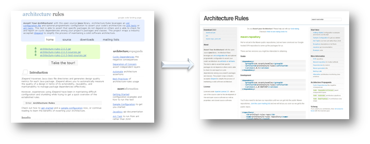

Thanks for visiting the Architecture Rules site. We have moved this informative site to a new domain.
Go there now
Why did we move?
We want to keep things simple, and we aren't happy about having to ask you to redirect to another site. However, this current site is hosted out of the googlecode.com SVN repository. This has been acceptable up until now, but does not allow us to utilize programming languages, such as PHP, to generate dynamic content.
The new site is backed by Wordpress which makes it easier to provide new content. For example, we've already created and index of code samples and page for the maven repository. We've also wired up the pages to update other pages automatically when new releases are made. Additionally, we now have a ton of RSS feeds so that you can keep track of the project without having to visit the site.
Thanks
So again, we apologize for asking you to redirect, and asking you to update your bookmarks, but with the new content and the ability for us to add content more quickly we hope that you find it worth it. Thanks.